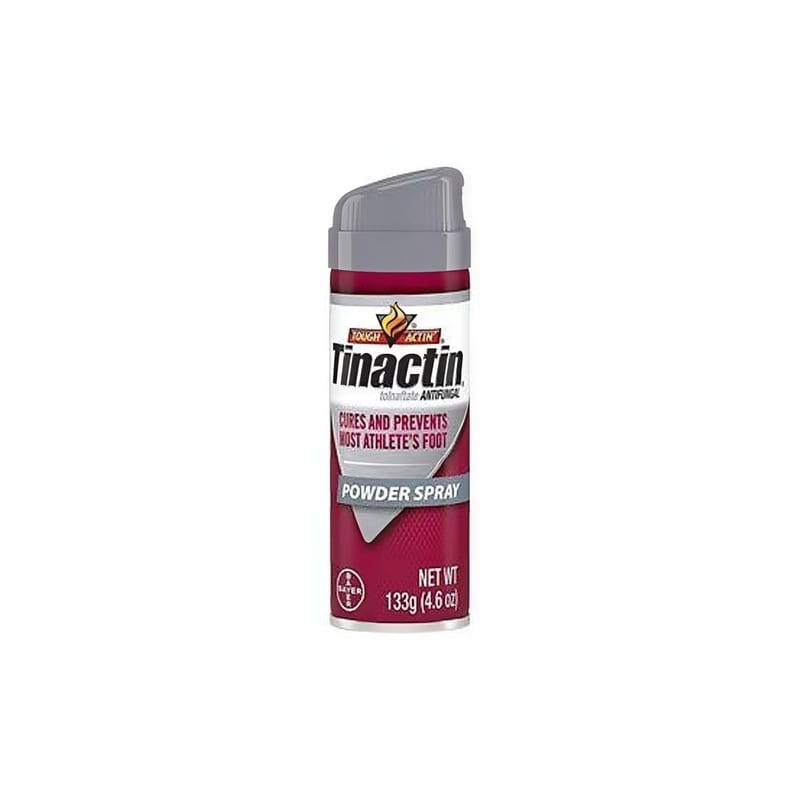

Tinactin Sprey

Ne için kullanılır
KT · Bölüm 1g TINACTIN” tolnaftat içeren, deriye uygulanan antifungal (mantarlara karşı kullanılan
j ilaçlar) sınıfına dahil, sprey formunda bir ilaçtır.
İ 150 g'lik metal kutuda, karton kutusu ve kullanma talimatı ile beraber kullanıma
j sunulmaktadır.
ğ TINACTIN? ayaklardaki, kasıklardaki ve vücuttaki mantar hastalıklarının tedavisi için
4 kullanılır.